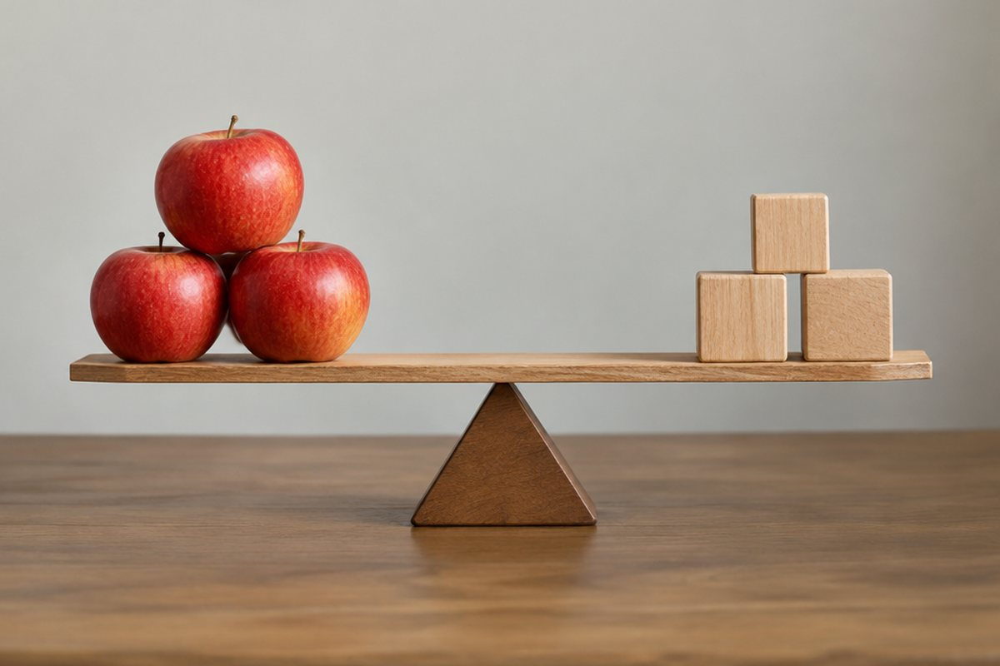

무게는 어떻게 잴까?

몸무게를 잴 때 체중계에 올라가요. 그런데 '무게'란 정확히 무엇이고, 저울은 어떻게 무게를 알아낼까요?
무게란 무엇일까요?
지구는 물체를 지구 쪽으로 끌어당겨요. 그래서 공을 던져도 다시 땅으로 떨어지지요.
지구가 물체를 끌어당기는 힘의 크기를 '무게'라고 해요. 무거운 물체일수록 지구가 더 세게 끌어당겨요.
사과가 나무에서 땅으로 떨어지는 것은 지구가 사과를 끌어당기기 때문이에요.
용수철로 무게 재기
용수철에 물체를 걸면 용수철이 늘어나요. 무거운 물체를 걸수록 용수철이 더 많이 늘어나요.
추를 하나씩 더 걸 때마다 용수철은 일정한 길이만큼씩 늘어나요. 이 성질을 이용해 무게를 재는 도구가 '용수철저울'이에요. 무게의 단위로는 g중, kg중, N(뉴턴) 등을 써요.
추 1개에 2cm 늘어나는 용수철은 추 3개를 걸면 6cm 늘어나요.
수평 잡기의 원리
널빤지 가운데를 받침점 위에 올려놓고 양쪽에 물체를 올려 기울지 않게 하는 것을 '수평 잡기'라고 해요.
무게가 같은 물체는 받침점에서 같은 거리에 놓아야 수평이 돼요. 무게가 다르면 무거운 물체를 받침점에 더 가깝게 놓아야 수평을 잡을 수 있어요.
시소를 탈 때 몸무게가 무거운 아빠는 가운데 쪽으로, 가벼운 아이는 끝 쪽에 앉으면 균형이 맞아요.
여러 가지 저울
양팔저울은 수평 잡기의 원리로 두 물체의 무게를 비교해요. 내려간 쪽 물체가 더 무거워요.
체중계, 가정용 저울, 전자저울처럼 생활에서 쓰는 저울도 많아요. 물건을 사고팔 때나 요리할 때, 몸무게를 잴 때 저울로 정확한 무게를 알 수 있어요.
양팔저울 한쪽에 사과, 다른 쪽에 귤을 올렸더니 사과 쪽이 내려갔다면 사과가 더 무거워요.
핵심 낱말
- 무게
- 지구가 물체를 끌어당기는 힘의 크기
- 용수철저울
- 용수철이 늘어나는 길이로 무게를 재는 저울
- 받침점
- 수평 잡기에서 물체를 받치는 가운데 점
- 수평
- 어느 쪽으로도 기울지 않은 상태
- 양팔저울
- 수평 잡기 원리로 두 물체의 무게를 비교하는 저울
한 줄 정리
- 무게는 지구가 물체를 끌어당기는 힘의 크기예요.
- 용수철은 무게에 따라 일정하게 늘어나며, 이를 이용해 무게를 재요.
- 무거운 물체는 받침점에 가깝게 놓아야 수평이 잡혀요.
학교 교육과정 연결
- [4과01-02] 수평잡기 활동을 통해 물체의 무게를 비교할 수 있다.
- [4과01-03] 무게를 정확히 비교하기 위해서는 저울이 필요함을 알고, 저울을 사용해 무게를 비교할 수 있다.